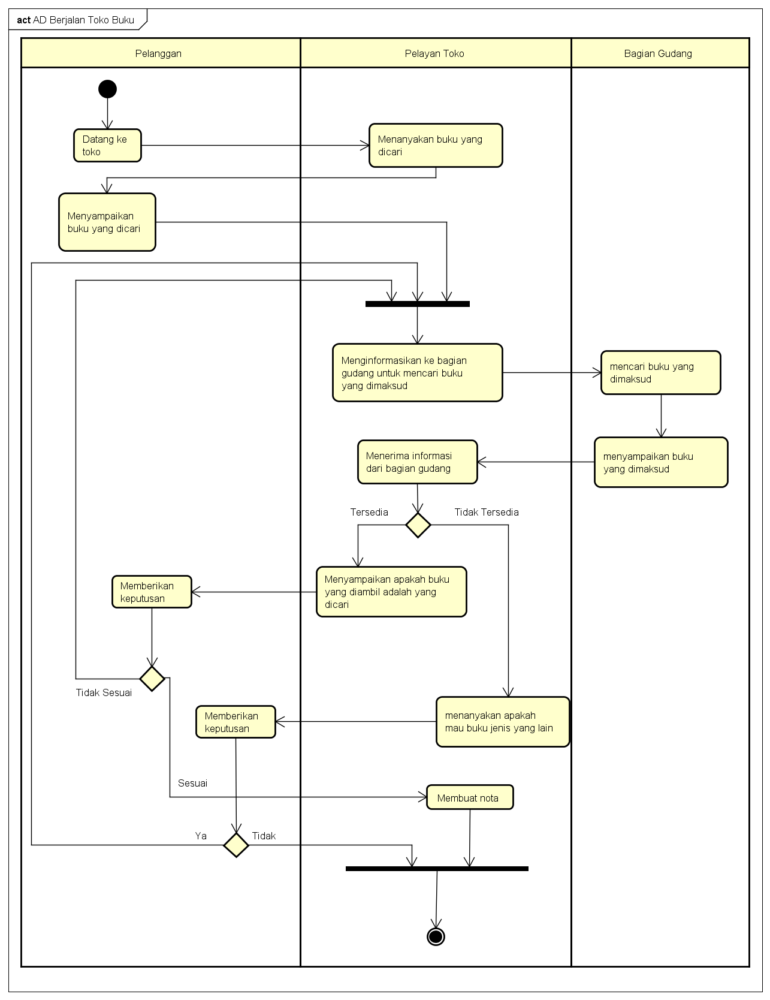

Selamat pagi pak :)
NIM: 1811500097
Nama: Livren Sandi
Kelompok: TI6A
Hasil saya menyadur pertemuan ke 2:
- Mengingat kembali cara membuat saduran di github serta diajarkan cara mgnggunakan orderlist dan list
- memahami analisa masalah dan analisa sistem berjalan
- Memahami apa itu Activity Diagram
- Membuat Activity Diagram dengan software astah
Hasil file project astah Download
gambar project yang saya coba membuat:

Screnshot materi yang diajarkan: